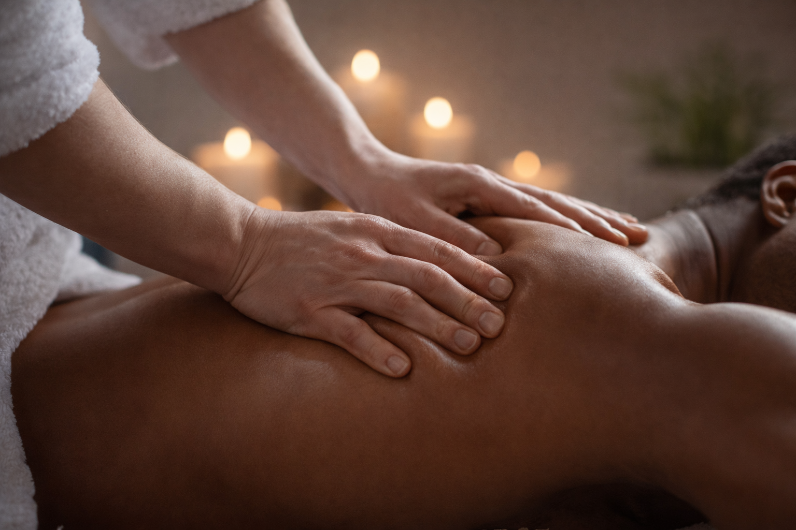
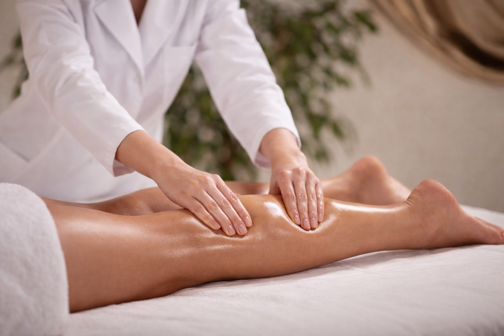
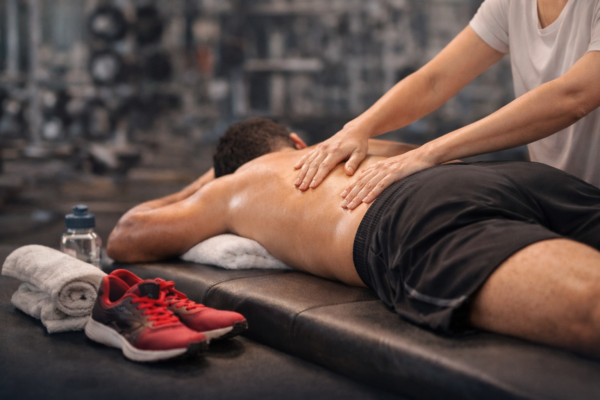
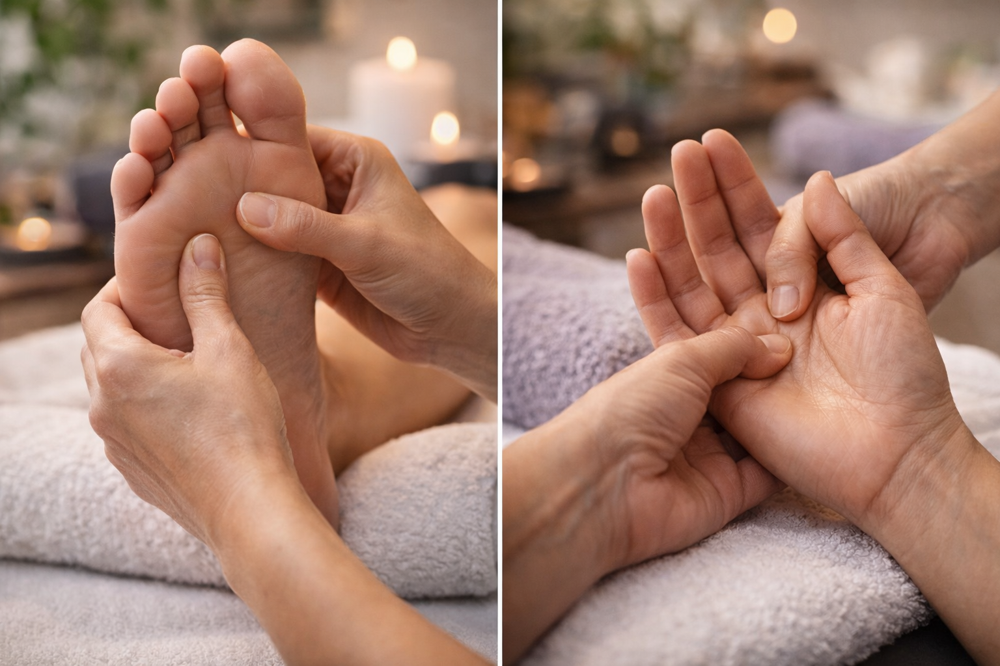

Opções pensadas para diferentes momentos, necessidades e contextos.

A massagem sueca é uma técnica clássica que utiliza movimentos suaves e ritmados para promover relaxamento profundo e bem-estar. Ideal para aliviar o estresse, melhorar a circulação e proporcionar uma sensação de leveza no corpo.

A massagem terapêutica é focada no alívio de dores e tensões musculares, promovendo recuperação e equilíbrio corporal. Com técnicas personalizadas, ajuda a melhorar a mobilidade, reduzir o estresse e proporcionar bem-estar físico e mental.

A drenagem linfática é uma técnica suave que estimula o sistema linfático, ajudando a reduzir inchaços e eliminar toxinas do organismo. Com movimentos leves e ritmados, promove sensação de leveza, melhora a circulação e contribui para o bem-estar geral.

Massagem esportiva voltada para preparo, recuperação e relaxamento muscular, ideal para praticantes de atividades físicas. Auxilia na prevenção de lesões, redução de tensões e melhora do desempenho e da recuperação pós-treino.
Quick massage ideal para eventos corporativos, oferecendo atendimentos rápidos focados no alívio de tensões em costas, ombros e pescoço. Proporciona relaxamento imediato e bem-estar, tornando a experiência mais leve e agradável para colaboradores e participantes.
Massagem Foulari
Massagem com Pindas Quentes
Massagem Turbinada (Modeladora)
Massagem com Pedras Quentes

Reflexologia dos pés e das mãos com estímulo de pontos específicos que se conectam a diferentes regiões do corpo. A técnica promove relaxamento profundo, equilíbrio energético e auxilia no alívio de tensões, proporcionando bem-estar físico e emocional.
Cromoterapia
Bambuterapia
Aromaterapia